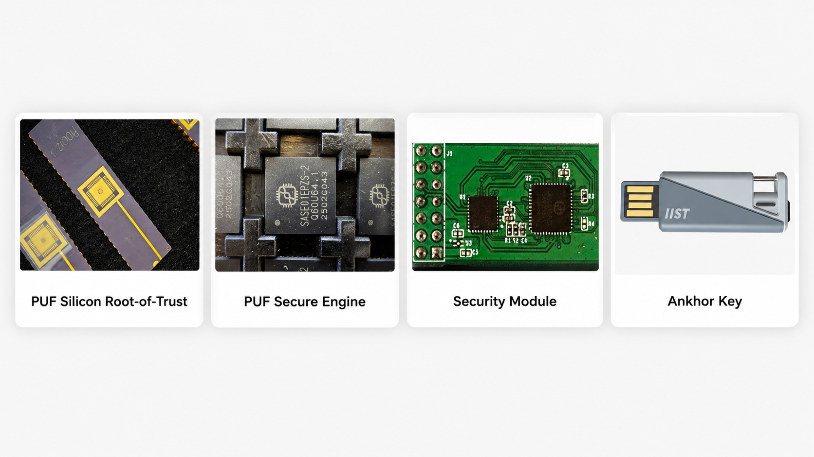

Raspberry Pi
Captures and signs the WAV.
Sensor Ankhor root
IIST at SEMICON 2026
Start with a USB key. Integrate a secure module. License Dynamic PUF as silicon IP for your next high-volume SoC. The same hardware-rooted trust can scale with your product.

One demo. Every trust boundary.
SoundLungs turns the complete security story into something visible: a respiratory-audio sensor must prove its device identity, establish a post-quantum protected session, and attach verifiable provenance before a Jetson processor will run AI.
Captures and signs the WAV.
Untrusted local network
Verifies every proof, then infers.
One technology · three integration paths
IIST lets teams prove the architecture with working hardware before committing it to silicon. Move from a deployable key or module to a custom SoC without changing the core trust model.
 Highest integration
Highest integration
Build native hardware roots of trust into an ASIC, SoC, secure MCU, or chiplet—without relying on permanently stored master keys.
 Fast integration
Fast integration
Add a hardware security anchor to an existing design through standard host interfaces, while keeping protected operations independent from the main processor.
Deploy now
Evaluate Dynamic PUF with a finished device that makes identity, protected signing, passkey access, PQC workflows, and content provenance tangible.
Why Dynamic PUF
Microscopic manufacturing variation creates a device-specific physical entropy source. IIST combines that source with Attestation Curve Cryptography to reconstruct independent cryptographic roots on demand—then uses the same physical foundation for true-random entropy.
Architecture and performance figures depend on the selected implementation and target process.
Evidence from silicon to system
This is not an IP-only promise. IIST has carried Dynamic PUF through silicon, a secure IC, an embedded module, a finished security key, and complete reference workflows.

Mass-production validated PUF silicon and a secure IC implementation on a mature TSMC 0.18 μm process.
Secure IC, module, and finished USB key form factors show a practical path from embedded integration to deployment.
Named product configurations include SESIP-certified secure silicon and a FIDO2-certified key path. Certification scope does not automatically transfer to every integration.
The SoundLungs reference platform combines hardware-protected identity and key operations with host software for PQC, FIDO2, C2PA, encrypted transport, and fail-closed AI policy.
SoundLungs verification sequence
Each mechanism answers a different question. The connection, user, action, device, session, data, and provenance are verified at separate boundaries.
Pinned device identity, PUF-derived roots, and protected cryptographic operations—including the demo’s signing and post-quantum key operations.
TLS, bulk AES-256-GCM streaming, C2PA packaging and policy verification, browser UX, orchestration, and the AI admission gate.
The split is intentional: it demonstrates how hardware trust becomes a complete product workflow. A silicon or module integration can move and optimize functions according to volume, performance, certification, and threat-model needs.
Find what matters to you
License the Dynamic PUF alone or combine it with selected cryptographic primitives and a security engine to create a customer-specific Root-of-Trust platform.
Use a secure IC, module, or USB key to validate device identity, trusted operations, secure access, and provenance. Move toward IP when scale and integration justify it.
IIST can create near-term product revenue with keys, modules, and secure silicon while building higher-volume, higher-leverage licensing opportunities in SoCs and chiplets.
What each technology does
The value is not a list of acronyms. It is the way distinct mechanisms combine into one verifiable security architecture.
Device-specific physical entropy supports root-key recovery, identity, and true-random seed generation.
ML-DSA-65 authenticates the demo handshake; ML-KEM-768 establishes fresh Category 3 session material in addition to TLS.
WebAuthn passkeys enable phishing-resistant access. The demo adds a separate hardware-bound proof for operator actions.
A Content Credential binds the authorized sensor and session to the exact audio bytes. It proves provenance—not factual truth.
Network presence grants nothing. User, action, endpoint, session, payload, provenance, and AI policy are checked separately.
Technical buyer FAQ
The physical trust concept remains consistent; packaging, host interface, performance, certification boundary, software split, BoM, and ownership change. The USB key is fastest to evaluate, a module is easier to integrate into an existing design, and IP gives the most control at volume.
No. The reference platform protects device identity and selected cryptographic operations in hardware, while the host software implements orchestration, bulk data handling, protocol packaging, verification policy, and UX. The split can be redesigned for a customer SoC or secure platform.
Independent roots reduce cross-domain dependency. Boot, firmware, maintenance, OEM/ODM, and applications can be isolated and governed separately rather than sharing one stored master secret and one failure domain.
It provides tamper-evident provenance under a configured trust policy: who signed, which bytes were signed, and whether the recording belongs to the live session. It does not prove that the content is factually or clinically true.
Certification applies to the specific named product and configuration in scope. It does not automatically transfer from a secure IC or key to a customer’s module, system, or IP integration. Ask IIST for the current certificate, version, and evaluation boundary relevant to your project.
No. It is an engineering exhibition demonstrator that uses respiratory audio to make the secure data path and AI admission policy visible. It makes no diagnostic, clinical-performance, or medical-device claim.
Continue the conversation
Tell us where your product is today—existing host, module design, secure IC, or new SoC—and what must be trusted. We will map the shortest path from working proof to volume integration.